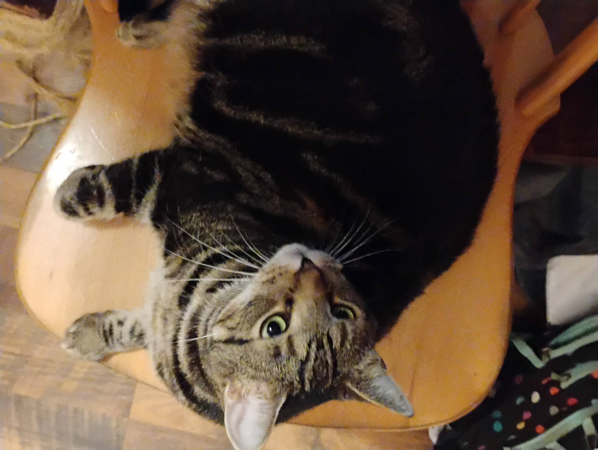

My name is Molly Corbett. I am 16 years old and I live with my cat, Theo, as well as my dad and his lemon-colored beagle, Tater. We live in the house my grandparents used to live in, before they moved to a house without stairs. My grandparents (mostly my grandma) have a fat orange cat named Tiger Lily, like the flowers that grow in the garden at their old house. My grandma spoils Tiger Lily a lot, so she got fat fast. I also have an older brother named Patrick who has gone to college at RIT. He shares a 4-person room with only 2 roommates, and he is part of a club that competes in building electric cars.
I go to school at Potsdam Central High School, where I am in 11th grade, and I take many accelerated courses and still get high grades. I got interested in coding when my school took visits to BOCES, so I filled out and returned an application for the Comptuer and Information Science program the same day the applications went out. It has since been really fun to learn even just the basic HTML and make webpages. The textbook work and the studying was very boring and slow. I am used to doing things a lot faster due to taking the advanced classes at my home school.
